今日主线
Top themes
macro_data: Indicators for Core CPI
earnings: Liesman: Nvidia whiplash tests Kevin Warsh’s push to read market signals
regulation: SEC Investor Advisory Committee to Host Dec. 3 Virtual Meeting
核心资产
1D snapshot · 2026-11-26
美股 SPY
-0.29%
QQQ
-0.65%
VIX
7.32%
BTC
1.65%
Gold
1.33%
Oil
2.85%
异动雷达
按 1D 绝对波动排序 · 2026-11-26
NG=F
COMMODITIES · strong_uptrend · 3.68
10.80%
^VIX
US_MACRO_MARKET · uptrend · 28.29
7.32%
3690.HK
HK_MARKET · strong_downtrend · 63.90
3.99%
RIPPLE
CRYPTO · strong_downtrend · 0.96
3.75%
9988.HK
HK_MARKET · strong_downtrend · 83.85
3.26%
SI=F
COMMODITIES · strong_downtrend · 42.03
3.10%
CL=F
COMMODITIES · strong_downtrend · 84.39
2.85%
HG=F
COMMODITIES · strong_downtrend · 5.49
2.42%
Must Read
优先阅读
这类宏观数据会直接改变市场对通胀、增长和政策路径的预期。
Tier 1
Bank of Japan Announcements
macro_data
high
BTC
DXY
GC=F
QQQ
SPY
大型科技股盈利和资本开支会影响纳指、半导体和 AI 交易主线。
Tier 2
CNBC Economy
earnings
high
AMZN
GOOGL
META
MSFT
NVDA
SEC Press Releases
regulation
high
BTC
COIN
ETH
crypto market
加密市场结构和监管变化会影响 BTC、ETH 及相关股票的风险溢价。
Tier 2
CoinDesk
crypto_market_structure
high
BTC
COIN
ETH
crypto market
图表面板
Summary charts · 2026-11-26
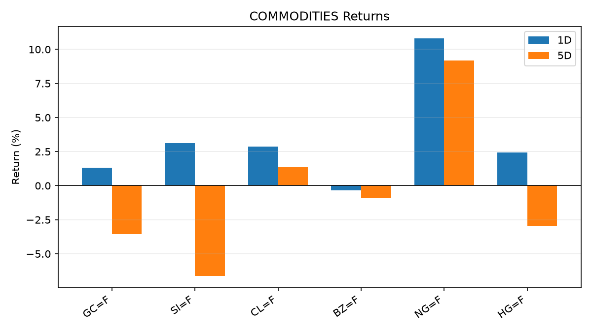
COMMODITIES
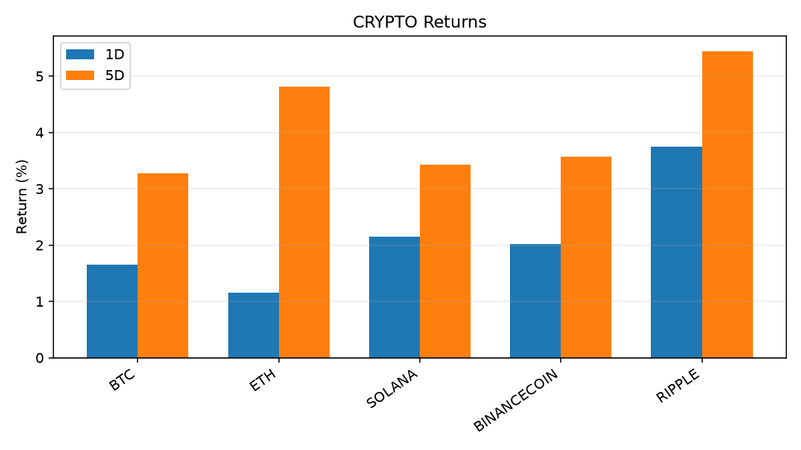
CRYPTO
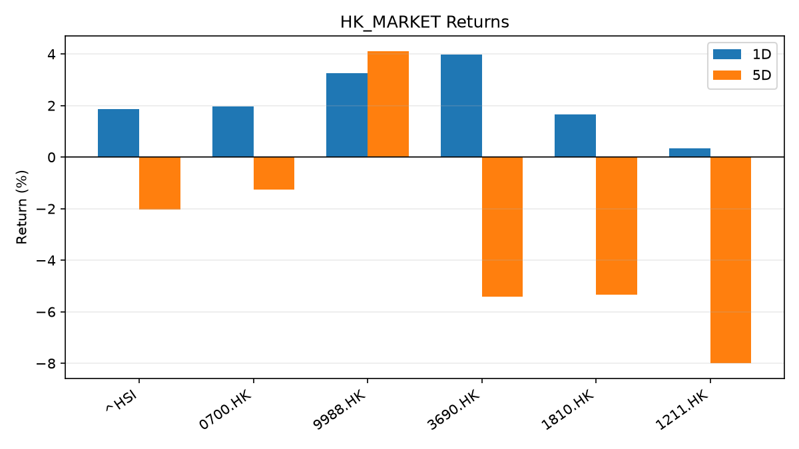
HK_MARKET
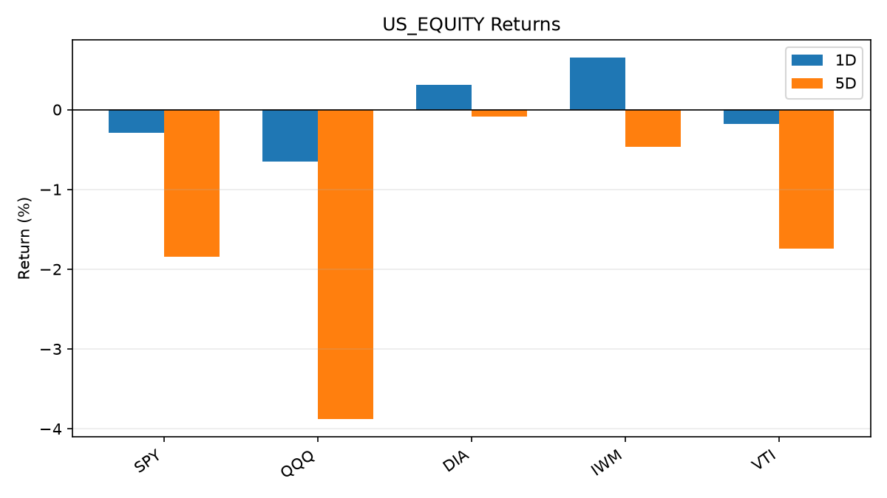
US_EQUITY
Global Macro Morning Briefing - 2026-11-26
Not financial advice / 非投资建议。
0. 今日总览
市场状态：unknown。市场信号不足，暂不判断明确状态。
今日三大主线：
macro_data: Indicators for Core CPI
earnings: Liesman: Nvidia whiplash tests Kevin Warsh’s push to read market signals
regulation: SEC Investor Advisory Committee to Host Dec. 3 Virtual Meeting
一句话结论：今日晨报重点关注：这类宏观数据会直接改变市场对通胀、增长和政策路径的预期。；大型科技股盈利和资本开支会影响纳指、半导体和 AI 交易主线。。跨资产方面，SPY 1D -0.29%；QQQ 1D -0.65%；^VIX 1D 7.32%；TLT 1D 0.92%；GC=F 1D 1.33%；CL=F 1D 2.85%；BTC 1D 1.65%；ETH 1D 1.16%；市场信号不足，暂不判断明确状态。政策、通胀、利率、美元、美债、能源和加密监管仍是主要观察线索。所有结论仅基于公开数据与短摘要整理，不构成投资建议。
1. 隔夜跨资产市场
美股：SPY 1D -0.29%，QQQ 1D -0.65%，整体趋势需结合 VIX 和利率确认。
美债/美元：TLT 1D 0.92%，美元指数 1D 0.01%，是判断折现率压力的核心线索。
黄金/原油：黄金 1D 1.33%，原油 1D 2.85%，用于观察避险、通胀和地缘风险。
加密：BTC 1D 1.65%，ETH 1D 1.16%，关注是否独立于纳指走出加密自身行情。
港股/A股：恒生 1D 1.87%，沪深300/上证 1D n/a，重点看中国政策预期与人民币线索。
风险观察：关注后续数据是否确认当前跨资产信号。
US_EQUITY
symbol
latest close
1D
5D
1M
YTD
trend
SPY
716.70
-0.29%
-1.85%
-6.88%
4.91%
strong_downtrend
QQQ
633.93
-0.65%
-3.88%
-12.11%
3.39%
downtrend
DIA
501.27
0.31%
-0.09%
-4.21%
3.65%
strong_downtrend
IWM
268.87
0.65%
-0.46%
-4.04%
8.08%
downtrend
VTI
353.20
-0.18%
-1.75%
-6.54%
5.02%
strong_downtrend
US_MACRO_MARKET
symbol
latest close
1D
5D
1M
YTD
trend
^VIX
28.29
7.32%
15.19%
61.47%
94.97%
uptrend
DX-Y.NYB
103.82
0.01%
-0.03%
1.47%
5.49%
uptrend
TLT
82.24
0.92%
2.52%
0.75%
-5.50%
uptrend
IEF
92.06
0.46%
1.53%
1.05%
-4.18%
uptrend
COMMODITIES
symbol
latest close
1D
5D
1M
YTD
trend
GC=F
3,609.30
1.33%
-3.54%
-11.42%
-16.64%
strong_downtrend
SI=F
42.03
3.10%
-6.61%
-22.60%
-40.44%
strong_downtrend
CL=F
84.39
2.85%
1.36%
-15.53%
47.23%
strong_downtrend
BZ=F
91.09
-0.34%
-0.94%
-20.01%
49.94%
strong_downtrend
NG=F
3.68
10.80%
9.19%
36.52%
1.77%
strong_uptrend
HG=F
5.49
2.42%
-2.95%
-17.06%
-2.62%
strong_downtrend
HK_MARKET
symbol
latest close
1D
5D
1M
YTD
trend
^HSI
22,376.01
1.87%
-2.04%
-3.11%
-15.04%
strong_downtrend
0700.HK
344.00
1.96%
-1.26%
-11.25%
-44.78%
strong_downtrend
9988.HK
83.85
3.26%
4.10%
-15.22%
-43.72%
strong_downtrend
3690.HK
63.90
3.99%
-5.40%
-10.25%
-38.91%
strong_downtrend
1810.HK
27.00
1.66%
-5.33%
5.39%
-32.97%
range_bound
1211.HK
58.15
0.35%
-7.99%
-17.46%
-41.11%
strong_downtrend
CRYPTO
symbol
latest close
1D
5D
1M
YTD
trend
BTC
60,743.73
1.65%
3.27%
-24.49%
-30.64%
strong_downtrend
ETH
1,697.42
1.16%
4.81%
-29.95%
-42.85%
strong_downtrend
SOLANA
71.11
2.15%
3.42%
-25.55%
-42.89%
strong_downtrend
BINANCECOIN
558.92
2.02%
3.57%
-22.31%
-35.21%
strong_downtrend
RIPPLE
0.96
3.75%
5.44%
-26.49%
-47.91%
strong_downtrend
2. 今日最重要的 10 条新闻
1. Indicators for Core CPI
来源：Bank of Japan Announcements
时间：2026-11-25T14:00:00+09:00
地区：Japan
事件类型：macro_data
重要性层级：Tier 1
一句话摘要：Indicators for Core CPI
为什么重要：这类宏观数据会直接改变市场对通胀、增长和政策路径的预期。
可能影响：主要影响 DXY，方向为 positive，强度 high；通胀压力可能推高政策利率预期并支撑美元。
资产：DXY
方向：positive
强度：high
原因：通胀压力可能推高政策利率预期并支撑美元。
资产：TLT
方向：negative
强度：high
原因：通胀上行通常推升收益率、压低长债价格。
资产：QQQ
方向：negative
强度：high
原因：更高利率对成长股估值折现率不利。
资产：SPY
方向：mixed
强度：medium
原因：名义增长可能支撑收入，但更高利率压制估值。
资产：GC=F
方向：mixed
强度：medium
原因：通胀对黄金是支撑，但实际利率上行会形成压力。
资产：BTC
方向：mixed
强度：medium
原因：抗通胀叙事和流动性收紧可能相互抵消。
原文链接：http://www.boj.or.jp/en/research/research_data/cpi/index.htm
2. Liesman: Nvidia whiplash tests Kevin Warsh’s push to read market signals
来源：CNBC Economy
时间：2026-11-25T12:26:41+00:00
地区：US
事件类型：earnings
重要性层级：Tier 2
一句话摘要：The extreme market gyrations and the drama surrounding Nvidia this past week have highlighted the dilemma facing Federal Reserve Chairman Kevin Warsh.
为什么重要：大型科技股盈利和资本开支会影响纳指、半导体和 AI 交易主线。
可能影响：主要影响 QQQ，方向为 mixed，强度 high；AI 资本开支会影响大型科技股盈利和估值预期。
资产：QQQ
方向：mixed
强度：high
原因：AI 资本开支会影响大型科技股盈利和估值预期。
资产：SMH
方向：mixed
强度：high
原因：AI 投资周期直接影响半导体需求。
资产：NVDA
方向：mixed
强度：high
原因：AI 训练和推理需求是英伟达收入预期核心变量。
资产：MSFT
方向：mixed
强度：medium
原因：云和 AI 资本开支影响利润率与增长叙事。
资产：GOOGL
方向：mixed
强度：medium
原因：AI 投资和搜索商业化影响估值。
资产：META
方向：mixed
强度：medium
原因：AI 基建支出与广告效率共同影响市场预期。
原文链接：https://www.cnbc.com/2026/11/25/nvidia-kevin-warsh-fed-market-signals.html
3. SEC Investor Advisory Committee to Host Dec. 3 Virtual Meeting
来源：SEC Press Releases
时间：2026-11-25T09:10:24-05:00
地区：US
事件类型：regulation
重要性层级：Tier 2
一句话摘要：The Securities and Exchange Commission’s Investor Advisory Committee will hold a virtual public meeting on Dec. 3, at 9:30 a.m. ET to discuss the trading of tokenized securities, bankruptcy, and accounting oversight. The meeting will be webcast…
为什么重要：监管变化会改变行业盈利预期和资产风险溢价。
可能影响：主要影响 BTC，方向为 mixed，强度 high；加密监管或 ETF 进展会改变 BTC 的资金流和风险溢价。
资产：BTC
方向：mixed
强度：high
原因：加密监管或 ETF 进展会改变 BTC 的资金流和风险溢价。
资产：ETH
方向：mixed
强度：high
原因：监管框架会影响 ETH 产品化和机构参与度。
资产：COIN
方向：mixed
强度：medium
原因：监管清晰度和执法风险会影响交易平台估值。
资产：crypto market
方向：mixed
强度：high
原因：信息影响整个加密市场结构，但方向取决于细节。
原文链接：https://www.sec.gov/newsroom/press-releases/2026-118-sec-investor-advisory-committee-host-dec-3-virtual-meeting
4. Bitcoin drops as November spot ETF outflows increase to record $4.71 billion
来源：CoinDesk
时间：2026-11-24T12:36:28+00:00
地区：global
事件类型：crypto_market_structure
重要性层级：Tier 2
一句话摘要：Bitcoin drops as November spot ETF outflows increase to record $4.71 billion
为什么重要：加密市场结构和监管变化会影响 BTC、ETH 及相关股票的风险溢价。
可能影响：主要影响 BTC，方向为 mixed，强度 high；加密监管或 ETF 进展会改变 BTC 的资金流和风险溢价。
资产：BTC
方向：mixed
强度：high
原因：加密监管或 ETF 进展会改变 BTC 的资金流和风险溢价。
资产：ETH
方向：mixed
强度：high
原因：监管框架会影响 ETH 产品化和机构参与度。
资产：COIN
方向：mixed
强度：medium
原因：监管清晰度和执法风险会影响交易平台估值。
资产：crypto market
方向：mixed
强度：high
原因：信息影响整个加密市场结构，但方向取决于细节。
原文链接：https://www.coindesk.com/daybook-us/2026/11/24/bitcoin-drops-as-november-spot-etf-outflows-increase-to-record-usd4-71-billion
5. Speech by Board Member TAMURA in Yamanashi (Economic Activity, Prices, and Monetary Policy in Japan)
来源：Bank of Japan Announcements
时间：2026-11-26T10:00:00+09:00
地区：Japan
事件类型：central_bank_speech
重要性层级：Tier 2
一句话摘要：Speech by Board Member TAMURA in Yamanashi (Economic Activity, Prices, and Monetary Policy in Japan)
为什么重要：央行官员表态可能影响市场对下一次会议的定价。
可能影响：可能影响利率、汇率、风险资产或大宗商品预期，但当前公开信息不足以判断明确方向。
资产：暂无明确资产映射
方向：unknown
强度：low
原因：公开信息不足以判断方向。
原文链接：http://www.boj.or.jp/en/about/press/koen_2026/ko261126a.htm
6. HP’s stock is a standout gainer in the tech selloff, as an earnings beat still matters
7. Fed’s preferred inflation gauge lands with a December rate increase already priced in
来源：CoinDesk
时间：2026-11-25T12:18:46+00:00
地区：global
事件类型：other
重要性层级：Tier 3
一句话摘要：Fed’s preferred inflation gauge lands with a December rate increase already priced in
为什么重要：这条信息暂未匹配到重大宏观、政策或市场事件，更适合作为背景跟踪。
可能影响：主要影响 DXY，方向为 positive，强度 high；通胀压力可能推高政策利率预期并支撑美元。
资产：DXY
方向：positive
强度：high
原因：通胀压力可能推高政策利率预期并支撑美元。
资产：TLT
方向：negative
强度：high
原因：通胀上行通常推升收益率、压低长债价格。
资产：QQQ
方向：negative
强度：high
原因：更高利率对成长股估值折现率不利。
资产：SPY
方向：mixed
强度：medium
原因：名义增长可能支撑收入，但更高利率压制估值。
资产：GC=F
方向：mixed
强度：medium
原因：通胀对黄金是支撑，但实际利率上行会形成压力。
资产：BTC
方向：mixed
强度：medium
原因：抗通胀叙事和流动性收紧可能相互抵消。
原文链接：https://www.coindesk.com/daybook-us/2026/11/25/fed-s-preferred-inflation-gauge-lands-with-a-december-rate-increase-already-priced-in
8. Fed's John Williams indicates higher interest rates likely 'over time' to address inflation
来源：CNBC Economy
时间：2026-11-24T13:33:26+00:00
地区：US
事件类型：other
重要性层级：Tier 3
一句话摘要：The influential central banker expressed confidence that inflation will get closer to the Fed's 2% target in 2027.
为什么重要：这条信息暂未匹配到重大宏观、政策或市场事件，更适合作为背景跟踪。
可能影响：主要影响 DXY，方向为 positive，强度 high；通胀压力可能推高政策利率预期并支撑美元。
资产：DXY
方向：positive
强度：high
原因：通胀压力可能推高政策利率预期并支撑美元。
资产：TLT
方向：negative
强度：high
原因：通胀上行通常推升收益率、压低长债价格。
资产：QQQ
方向：negative
强度：high
原因：更高利率对成长股估值折现率不利。
资产：SPY
方向：mixed
强度：medium
原因：名义增长可能支撑收入，但更高利率压制估值。
资产：GC=F
方向：mixed
强度：medium
原因：通胀对黄金是支撑，但实际利率上行会形成压力。
资产：BTC
方向：mixed
强度：medium
原因：抗通胀叙事和流动性收紧可能相互抵消。
原文链接：https://www.cnbc.com/2026/11/23/john-williams-fed-inflation-rate-hikes.html
3. 政策与央行观察
1. SEC Investor Advisory Committee to Host Dec. 3 Virtual Meeting
来源：SEC Press Releases
时间：2026-11-25T09:10:24-05:00
地区：US
事件类型：regulation
重要性层级：Tier 2
一句话摘要：The Securities and Exchange Commission’s Investor Advisory Committee will hold a virtual public meeting on Dec. 3, at 9:30 a.m. ET to discuss the trading of tokenized securities, bankruptcy, and accounting oversight. The meeting will be webcast…
为什么重要：监管变化会改变行业盈利预期和资产风险溢价。
可能影响：主要影响 BTC，方向为 mixed，强度 high；加密监管或 ETF 进展会改变 BTC 的资金流和风险溢价。
资产：BTC
方向：mixed
强度：high
原因：加密监管或 ETF 进展会改变 BTC 的资金流和风险溢价。
资产：ETH
方向：mixed
强度：high
原因：监管框架会影响 ETH 产品化和机构参与度。
资产：COIN
方向：mixed
强度：medium
原因：监管清晰度和执法风险会影响交易平台估值。
资产：crypto market
方向：mixed
强度：high
原因：信息影响整个加密市场结构，但方向取决于细节。
原文链接：https://www.sec.gov/newsroom/press-releases/2026-118-sec-investor-advisory-committee-host-dec-3-virtual-meeting
2. Bitcoin drops as November spot ETF outflows increase to record $4.71 billion
来源：CoinDesk
时间：2026-11-24T12:36:28+00:00
地区：global
事件类型：crypto_market_structure
重要性层级：Tier 2
一句话摘要：Bitcoin drops as November spot ETF outflows increase to record $4.71 billion
为什么重要：加密市场结构和监管变化会影响 BTC、ETH 及相关股票的风险溢价。
可能影响：主要影响 BTC，方向为 mixed，强度 high；加密监管或 ETF 进展会改变 BTC 的资金流和风险溢价。
资产：BTC
方向：mixed
强度：high
原因：加密监管或 ETF 进展会改变 BTC 的资金流和风险溢价。
资产：ETH
方向：mixed
强度：high
原因：监管框架会影响 ETH 产品化和机构参与度。
资产：COIN
方向：mixed
强度：medium
原因：监管清晰度和执法风险会影响交易平台估值。
资产：crypto market
方向：mixed
强度：high
原因：信息影响整个加密市场结构，但方向取决于细节。
原文链接：https://www.coindesk.com/daybook-us/2026/11/24/bitcoin-drops-as-november-spot-etf-outflows-increase-to-record-usd4-71-billion
3. Speech by Board Member TAMURA in Yamanashi (Economic Activity, Prices, and Monetary Policy in Japan)
来源：Bank of Japan Announcements
时间：2026-11-26T10:00:00+09:00
地区：Japan
事件类型：central_bank_speech
重要性层级：Tier 2
一句话摘要：Speech by Board Member TAMURA in Yamanashi (Economic Activity, Prices, and Monetary Policy in Japan)
为什么重要：央行官员表态可能影响市场对下一次会议的定价。
可能影响：可能影响利率、汇率、风险资产或大宗商品预期，但当前公开信息不足以判断明确方向。
资产：暂无明确资产映射
方向：unknown
强度：low
原因：公开信息不足以判断方向。
原文链接：http://www.boj.or.jp/en/about/press/koen_2026/ko261126a.htm
4. 市场异动与图表
QQQ 下跌 -0.65%
VIX 上涨 7.32%
TLT 上涨 0.92%
Gold 上涨 1.33%
Oil 上涨 2.85%
SPY
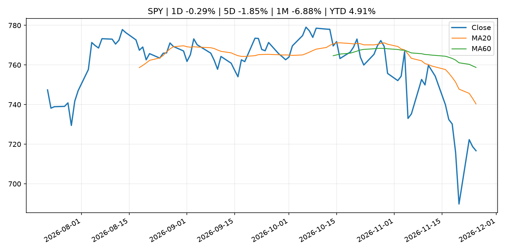
QQQ
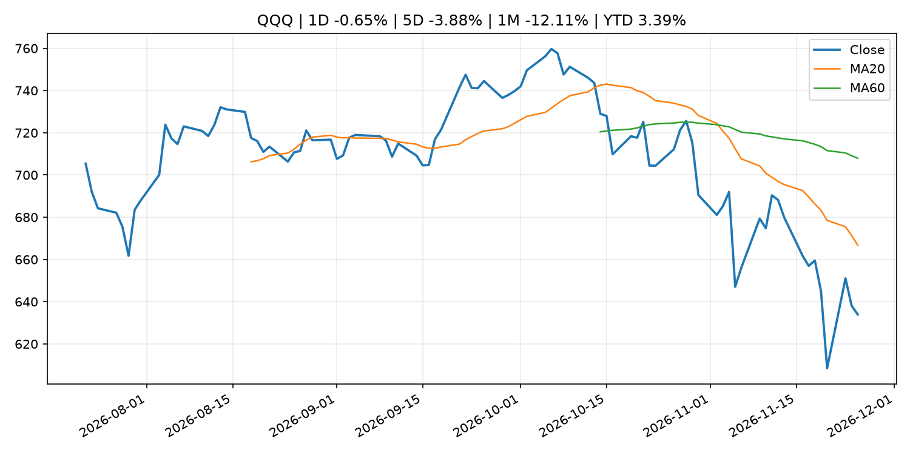
^VIX
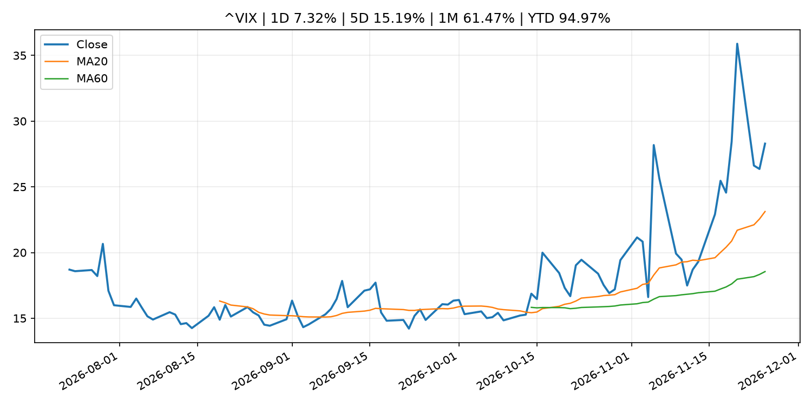
TLT
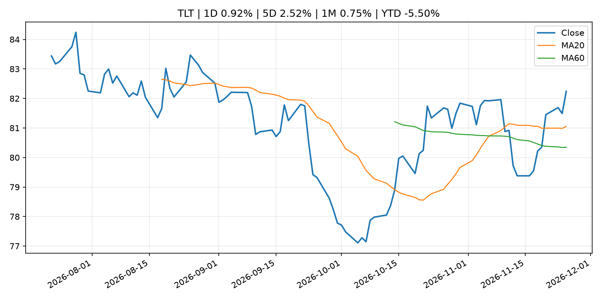
GC=F
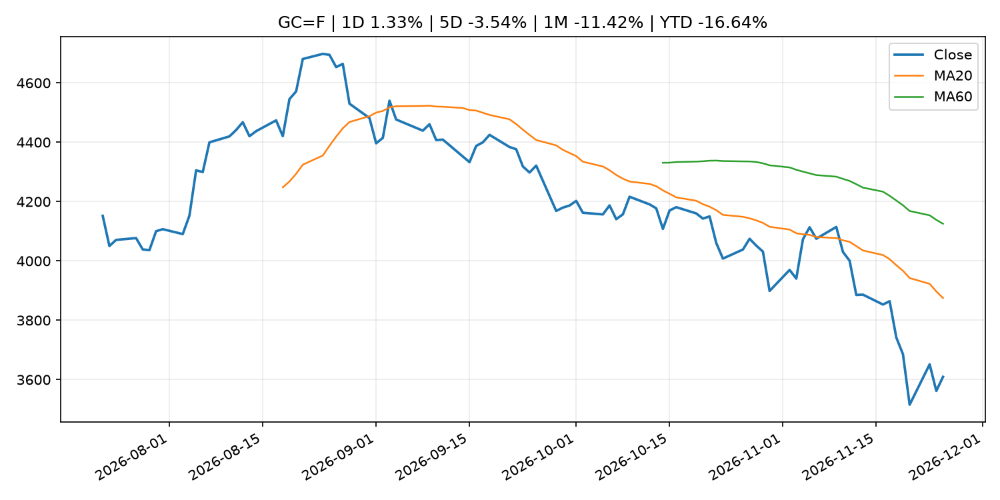
CL=F
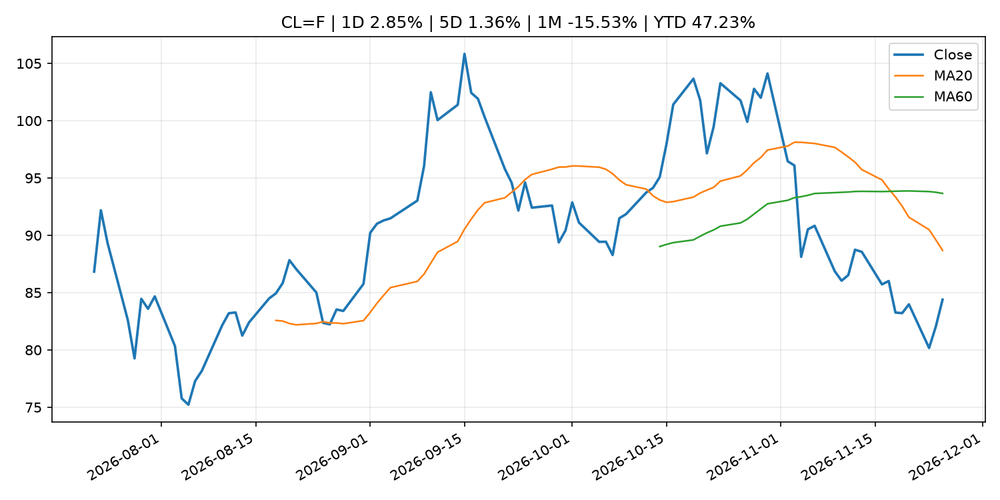
BTC
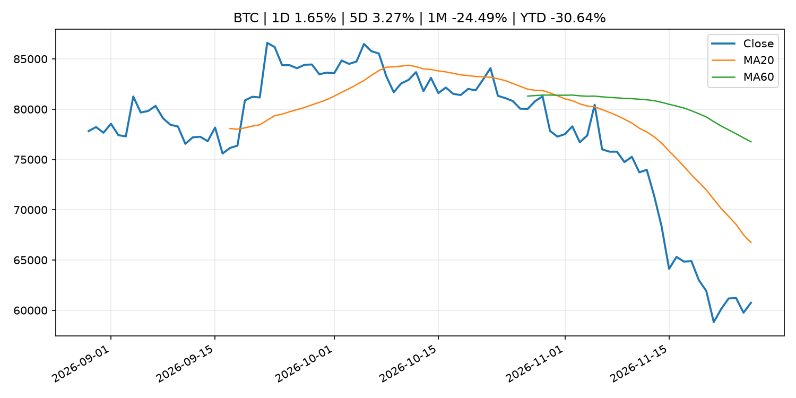
ETH
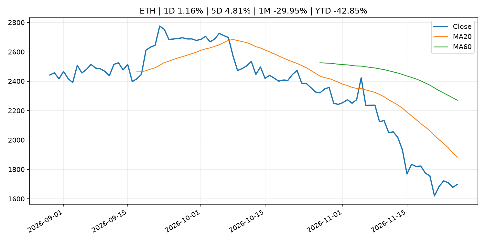
^HSI
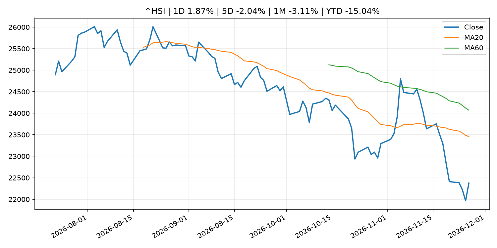
5. 华尔街与机构公开观点
6. 今日重点关注
经济数据：经济数据：暂无可靠公开日历数据；如配置经济日历源后可自动填充。
央行讲话：央行讲话：暂无可靠公开日历数据；重点跟踪 Fed、ECB、BoJ、PBOC 官网 RSS。
财报：财报：暂无可靠数据。
政策事件：政策事件：暂无可靠数据。
风险提醒：风险提醒：关注数据源失败项、突发地缘风险、利率和美元的二阶反应。
7. 英文金融表达与宏观概念
inflation expectations ：通胀预期，指家庭、企业或市场对未来通胀的预估。 例句：Inflation expectations can shape wage bargaining and bond yields.real yield ：实际收益率，名义利率扣除通胀预期后的收益率。 例句：Gold often reacts more to real yields than nominal yields.risk-off ：避险模式，资金偏向美元、国债、黄金等防御资产。 例句：A geopolitical shock can push markets into risk-off mode.market structure ：市场结构，指交易、托管、清算、ETF、监管等制度安排。 例句：Crypto market structure rules can affect institutional participation.AI capex ：AI 资本开支，指云厂商和科技公司投入 AI 基建的支出。 例句：AI capex guidance can move semiconductor stocks.terminal rate ：终端利率，市场预期本轮加息周期的最高政策利率。 例句：A higher terminal rate can pressure growth stocks.
8. 背景材料
Where the market may be mispricing risk most: AI boom, volatility, high-yield bonds （CNBC Economy，other）：The AI boom could trigger a recession, but data centers remain an attractive investment opportunity, a hedge fund manager said.Agencies announce dollar thresholds for applicability of truth in lending and consumer leasing rules for consumer credit and lease transactions （Federal Reserve Press Releases，other）：Agencies announce dollar thresholds for applicability of truth in lending and consumer leasing rules for consumer credit and lease transactionsAgencies announce dollar thresholds for smaller loan exemption from appraisal requirements for higher-priced mortgage loans （Federal Reserve Press Releases，other）：Agencies announce dollar thresholds for smaller loan exemption from appraisal requirements for higher-priced mortgage loans'This time actually seems different': Crypto veterans brace for more pain as bitcoin tumbles （CoinDesk，other）：'This time actually seems different': Crypto veterans brace for more pain as bitcoin tumblesECB and Sveriges Riksbank conclude agreement for Sweden to join T2 （ECB Press Releases，other）：ECB and Sveriges Riksbank conclude agreement for Sweden to join T2Crypto Long & Short: Bitcoin investors can’t keep ignoring Japan （CoinDesk，other）：Crypto Long & Short: Bitcoin investors can’t keep ignoring JapanFed’s preferred inflation gauge lands with a December rate increase already priced in （CoinDesk，other）：Fed’s preferred inflation gauge lands with a December rate increase already priced inEther, DeFi fall twice as hard as bitcoin as equities selloff resumes （CoinDesk，other）：Ether, DeFi fall twice as hard as bitcoin as equities selloff resumesItaly’s UniCredit launches six-year bitcoin certificate with gains capped at 65% （CoinDesk，other）：Italy’s UniCredit launches six-year bitcoin certificate with gains capped at 65%Gold's haven status has lost its edge over bitcoin, and the Fed's to blame （CoinDesk，other）：Gold's haven status has lost its edge over bitcoin, and the Fed's to blameEU proposes $54.7 billion fund for AI, quantum startups alongside post-quantum security push （CoinDesk，other）：EU proposes $54.7 billion fund for AI, quantum startups alongside post-quantum security pushCard payments edge past cash in shops; euro area consumers want both （ECB Press Releases，other）：Card payments edge past cash in shops; euro area consumers want bothLive updates: Bitcoin climbs from lows as markets bounce from big early declines （CoinDesk，other）：Live updates: Bitcoin climbs from lows as markets bounce from big early declinesJapanese Government Bonds Held by the Bank of Japan （Bank of Japan Announcements，other）：Japanese Government Bonds Held by the Bank of JapanA year after buying bitcoin, Czech central bank won't say what it's worth （CoinDesk，other）：A year after buying bitcoin, Czech central bank won't say what it's worthBank of Japan Accounts (November 20) （Bank of Japan Announcements，routine_announcement）：Bank of Japan Accounts (November 20)Average Contract Interest Rates on Loans and Discounts (Sept.) （Bank of Japan Announcements，other）：Average Contract Interest Rates on Loans and Discounts (Sept.)Services Producer Price Index (Oct.) （Bank of Japan Announcements，other）：Services Producer Price Index (Oct.)Minutes of the Board's discount rate meetings on October 19 and October 28, 2026 （Federal Reserve Press Releases，other）：Minutes of the Board's discount rate meetings on October 19 and October 28, 2026'AI trade never died': Traders see room for market recovery, but bitcoin's participation is another story （CoinDesk，other）：'AI trade never died': Traders see room for market recovery, but bitcoin's participation is another story
9. 数据源、失败项与免责声明
采集时间：2026-11-26T03:58:27
数据源：公开 RSS、Yahoo Finance、CoinGecko、AKShare、FRED、SEC data.sec.gov，以及用户自有 inputs/reports 文件。
合规说明：不绕过 WSJ、Bloomberg、FT、Reuters 等付费墙；对付费媒体只使用公开 RSS 标题、摘要、链接和发布时间。
免责声明：Not financial advice / 非投资建议。本项目仅供个人学习、研究和信息整理，不构成投资建议、交易建议或任何收益承诺。
失败或跳过的数据源：
crypto data failed coin=dogecoin
China market data failed symbol=上证指数: stock_zh_index_daily_em 已在 1.20.44 更名为 index_zh_daily_em，请改用 ak.index_zh_daily_em；参数与返回的列也可能有调整，用 ak.interface_info("index_zh_daily_em") 查看。完整对照见 https://akshare.akfamily.xyz/changelog.html#changelog-rename
China market data failed symbol=深证成指: stock_zh_index_daily_em 已在 1.20.44 更名为 index_zh_daily_em，请改用 ak.index_zh_daily_em；参数与返回的列也可能有调整，用 ak.interface_info("index_zh_daily_em") 查看。完整对照见 https://akshare.akfamily.xyz/changelog.html#changelog-rename
China market data failed symbol=创业板指: stock_zh_index_daily_em 已在 1.20.44 更名为 index_zh_daily_em，请改用 ak.index_zh_daily_em；参数与返回的列也可能有调整，用 ak.interface_info("index_zh_daily_em") 查看。完整对照见 https://akshare.akfamily.xyz/changelog.html#changelog-rename
China market data failed symbol=沪深300: stock_zh_index_daily_em 已在 1.20.44 更名为 index_zh_daily_em，请改用 ak.index_zh_daily_em；参数与返回的列也可能有调整，用 ak.interface_info("index_zh_daily_em") 查看。完整对照见 https://akshare.akfamily.xyz/changelog.html#changelog-rename
China market data failed symbol=中证500: stock_zh_index_daily_em 已在 1.20.44 更名为 index_zh_daily_em，请改用 ak.index_zh_daily_em；参数与返回的列也可能有调整，用 ak.interface_info("index_zh_daily_em") 查看。完整对照见 https://akshare.akfamily.xyz/changelog.html#changelog-rename
China market data failed symbol=科创50: stock_zh_index_daily_em 已在 1.20.44 更名为 index_zh_daily_em，请改用 ak.index_zh_daily_em；参数与返回的列也可能有调整，用 ak.interface_info("index_zh_daily_em") 查看。完整对照见 https://akshare.akfamily.xyz/changelog.html#changelog-rename
FRED_API_KEY not set; skipping FRED macro series
SEC failed cik=0000320193
SEC failed cik=0000789019
SEC failed cik=0001045810
SEC failed cik=0001318605
SEC failed cik=0001577552